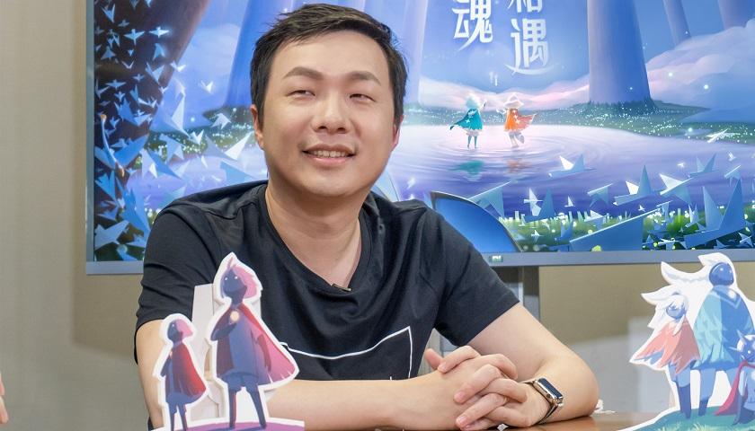

陈星汉在设计《光遇》这款游戏时，其核心理念主要体现在以下几个方面： 1. 社交与情感共鸣：陈星汉希望《光遇》能够强调社交元素，并激发玩家之间的善意和情感共鸣。他认为游戏不仅是商业化的产品，更是能够触动人心的艺术作品。在《光遇》中，玩家之间的互动被设计为渐进式的社交，从相遇到成为朋友，再到解锁更多的互动动作，这样的设计旨在建立更深层次的情感联系。 2. 非竞争性游戏体验：陈星汉希望改变社会对游戏的看法，创作一种既能够触动玩家，又能让玩家的配偶或孩子们产生共鸣的体验。他强调游戏应该提供与一部皮克斯动画电影类似的体验，而不是让玩家在竞争中感到压力。 3. “为他人付费”的商业模式：在付费问题上，陈星汉试图寻找一个平衡点，提出了“为他人付费”的概念。他希望这种付费方式不会打破游戏带来的情感，而是通过为他人付费来建立友谊和社交联系。 4. 去标签化的社交：《光遇》中的社交设计被称为“去标签化”社交，游戏中的玩家没有身份没有姓名，成为好友后可以给对方取名，这种设计旨在减少社交压力，让玩家更自然地建立关系。 5. 正面反馈与积极行为鼓励：陈星汉与儿童心理学家讨论后，决定在游戏中用正面反馈来鼓励玩家的积极行为，反之，对于不希望看到的行为则不提供任何反馈。这一理念贯穿于《光遇》的社交和奖励系统。 6. 脆弱性与合作：陈星汉认为，如果游戏让玩家觉得自己很脆弱，那么他们就会更加关心身边的其他人，并倾向于通过合作来解决问题，而不是引发不良行为。 7. 无障碍性和包容性：在设计《光遇》时，陈星汉考虑到了无障碍性和包容性，让每个人都能享受到游戏。他认为移动设备是向所有人开放的多人游戏的完美平台。 这些理念共同构成了《光遇》这款游戏的核心精神，旨在创造一个温暖、合作、充满情感共鸣的游戏体验。